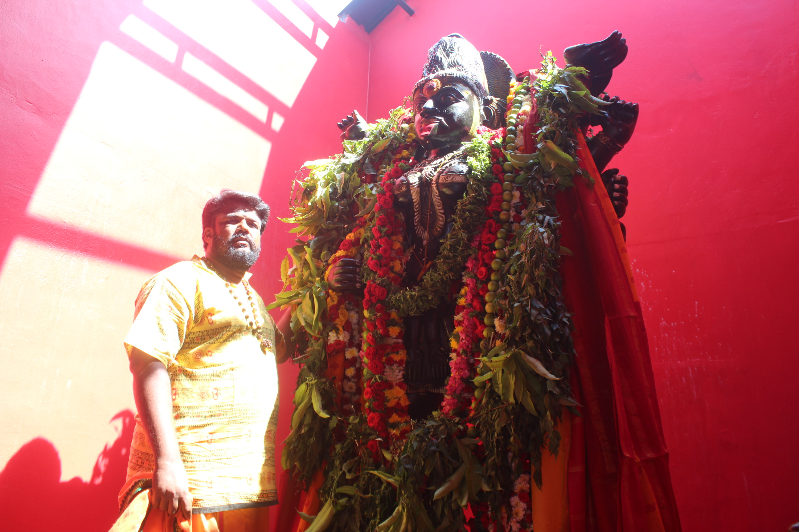
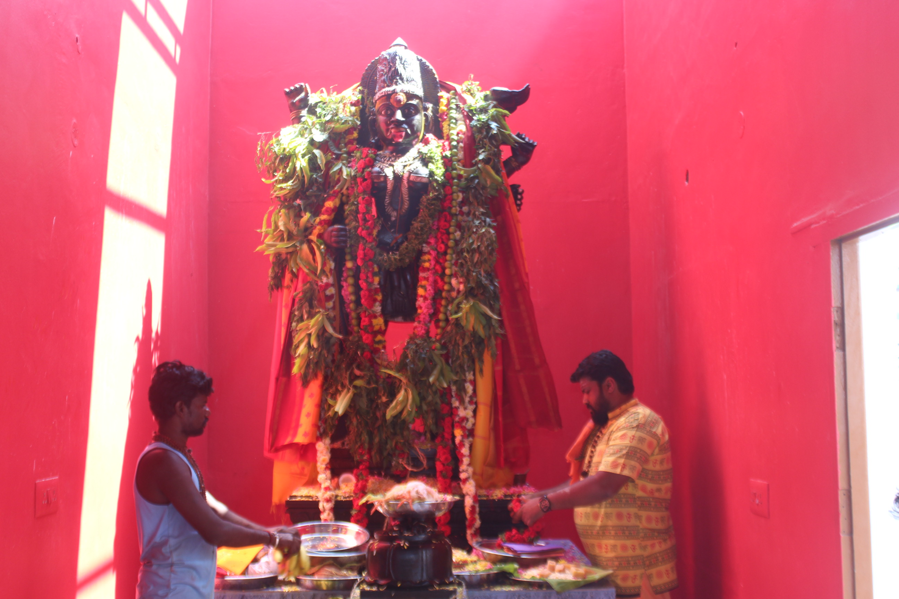
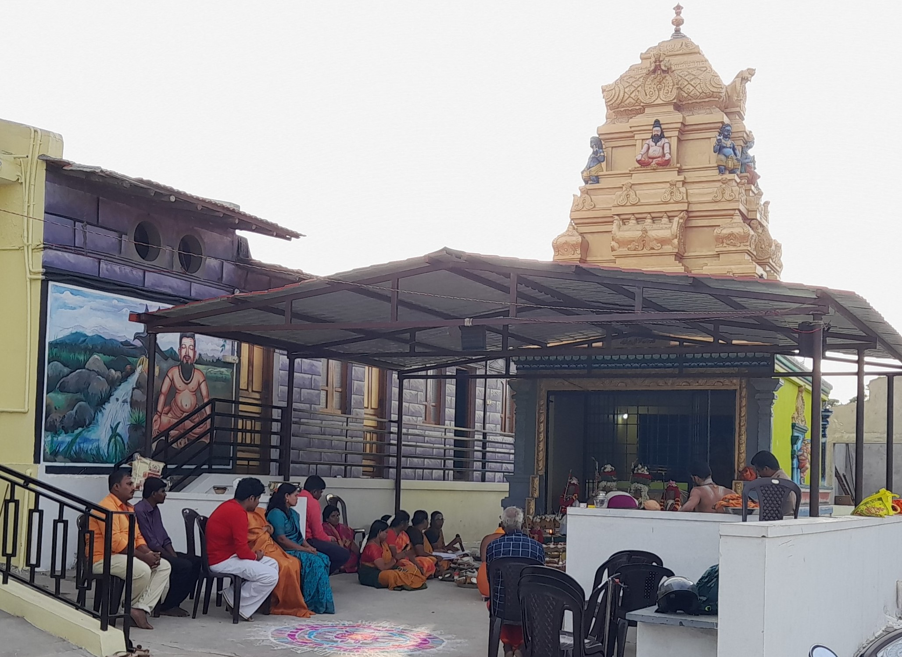
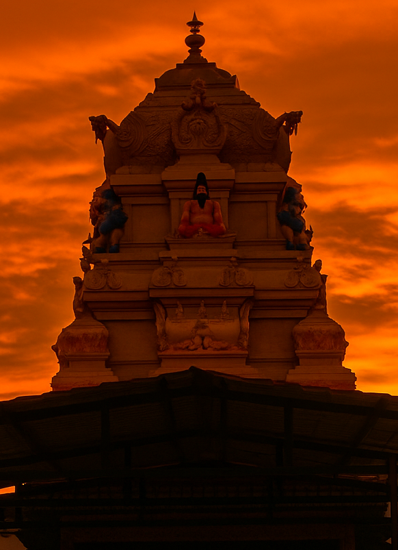

Our Events

August 8, 2014, saw the birth of Guruji's twins. Guruji and his family were residing at his
wife's mother's house at the time. Following his birth, Guruji encountered significant difficulties; he
participated in Hindutva-related protests, which resulted in police charges against him. Guruji rarely left
the house to avoid further damages. Guruji's wife found it difficult to handle the twins by herself as there
was no one else to assist. The ground floor was rented out, and Guruji's mother-in-law occupied the first
floor. A girl named Asha Rani, who was on a two-month break and in her final year of an MBA, stayed there
along with her Father. Since Guruji's wife found it difficult to manage twins, she would come upstairs to
help
with the babies.
Prior to this, Guruji was a recognised expert on astrology, prashana/predictions, occult practice, and
dosha.
Parihara obtained a PhD in these fields, conducted a great deal of research, and published about them as
well,
but he was unable to pursue them professionally because he was working in construction and real estate at
the
time.
Asha would now come to look after the children, and Guruji's wife would help her in exchange. Asha stopped
coming after that, for five day Guruji's wife managed hir kids all alone. Asha eventually appeared one day
when Guruji was asleep. She sat next to Guruji's wife, who chastised her for not showing up. When he heard
the
noise, Guruji woke up, She explained that she was having problems at home. As Guruji asked more questions,
he
noticed something unusual about her face something was not right, he thought.
Guruji immediately forewarned his wife to keep her away from their children. She went on to disclose that both her mother and her sister had died by suicide. The locals thought this was because of some ghostly activity. Asha's father was sleeping on the couch five days ago while Asha was in the kitchen cooking. 'Don't do anything, leave me alone!' he cried in his sleep. With her mother and sister gone, now that she only has her father, she was concerned about what would happen to him, she became enraged, and many blamed paranormal forces for it. She yelled, "Who are you?" in an attempt to confront the creature. You're where? Why torture my dad? Face me, if you dare! She slept on the same couch that night. She was asleep when someone walked over, sat on her, and hit her in the forehead. She fell as it struck and was unable to get out until daylight. She informed her father in the morning that she slept off the sofa last night. She did not reveal much as she was worried that it would scare her dad off. After that, the torment continued daily lasting four or five days, which kept her away.She shared these experiences with the Gurujis family on the fifth day, but her father disregarded them because he was an alcoholic who held a respectable government job and didn't think paranormal things existed. She pushed him away, unsure of what to do.
Asha was worried since her father would not believe her and would make fun of her if she performed a pooja
to prevent all unnatural entities from hurting them. Guruji even recommended a few persons who could do
that. Guruji promised to assist her, saying he would come to her home that evening and conduct a puja.
However, Guruji asked her to keep this confidential from everyone. Guruji was succeeding in his career and
had no intention of turning this into a career.
Guruji made the decision to go to Asha's residence with his wife after putting his children to sleep. Guruji
arranged everything, drove around, and collected everything needed for pooja. Everyone saw the paranormal
beings for themselves that night during the puja. Despite their insistence on participating, Guruji gave the
other participants strong instructions to stay away during this activity. Every evil forces were put to rest
that night, Asha Rani out of sheer delight told everyone, including her family, about the experience after
everything was resolved. From September 2014, about thirty to forty people started visiting Guruji every
day. People came with various problems, but Guruji couldn't serve them properly from his residence.


There was no denying the clear necessity for an Ashram. As a result, Guruji had to find a location as soon
as possible and establish an ashram. Guruji continued to look for a suitable location for it in light of
this. In addition, Guruji had the notion to erect a tiny temple in the location where he planned to install
Maragadha(Emerald) Linga Shivalingam. The temple was supposed to be inside the ground(Bhoomi) rather than on
it, or a pit at least ten feet deep would have to be dug. People should be able to see the Shivalingam
inside that pit. A temple with an area around 1,430 to 1,500 square feet, as large as a house, Ashram and a
Temple with a land area of roughly three to five cents.
Guruji is a pencil artist as well, and he used this idea for the temple to create a basic plan. As Guruji
was building it, he considered how to make that temple come to life, how to design it, and how to safely
construct it. He was actively searching for a location. Money wasn't a problem because Guruji hails from a
wealthy family, but back then, it was. The difficulty at the time was that the majority of the funds were
blocked because of the ongoing police cases. For this reason, Guruji was looking for a good location, within
his budget.
During this time, A student named Lokeshwari called Guruji from Malaysia. Guruji had cleared a problem for
her and She had been his disciple since some months by now. She frequently called Guruji. "Last night, I had
a dream," she stated at seven in the morning. In a village, you were erecting a Shivalinga. At the time of
the installation, it was surrounded by Spatika flowers in a populated village. It was beneath the earth, not
on it. Guruji enquired if it matched and provided her a picture of his pencil drawings right away. "This is
what I saw in my dream, Guruji," she added. Guruji was therefore more persuaded to carry it out. There must
be a divine force at work if she witnessed it in her dream.
One fine day, Guruji was at home and under police protection, he had police protection during this time.
Karthik approached Guruji and said, "Anna, I've found a place at a good rate, around 11 lakhs, and this had
a main road access too." In response, Guruji said, "At this time, I don't have that capacity. I'm seeking
for a land of 4-5 lakhs to build a temple, but 11 lakhs is more than I can handle. If you find one at a low
cost, let me know". Karthik left after agreeing. Ten minutes later, another man arrived to meet Guruji,
this time it was Thankavel, was a mechanic by profession. Guruji's family also operated a truck company, and
this man fixed Trucks for him. When Guruji informed him that he was building a house,Thankavel said that he
also desired a location like that, preferably near a road within 10-15 lakhs.
Recalling that Karthik had mentioned this place, Guruji promised to check with Karthik. After calling
Karthik, who consented to come, Thankavel asked Guruji to check out the property and said he would return in
the evening because he had to leave for work. Guruji agreed to check it because of his experience managing
large projects in real estate. That evening, Thankavel returned and expressed his liking for the 11-cent
plot. Thankavel and Karthik decided to register it, and they did so in ten days. Thirty days later, without
giving a reason, Thankavel called Guruji and urged him to sell the property immediately. When Guruji
questioned, "Why?" Thankavel replied that he didn't have a clear explanation but that he wanted the plot to
sell as soon as possible.
Although Guruji agreed, he became agitated due to Thankavel constant calls. Guruji emphasised that selling a
plot takes time, and right now, I'm working on my plan to purchase a land for myself. I'm in a rather
forested area on the outskirts of Hosur, wish to purchase it. Thankavel replied, "No, Guruji, I'm in a
hurry." He also enquired as to why he wanted a location so distant from Hosur, to which Guruji replied that
he required budget friendly property for a temple. Thankavel suggested that Guruji purchase his land,
Although his budget was excessive 11 lakhs, which Guruji couldn't afford, Thankavel asked "How much do you
have right now?" enquired Thankavel. Guruji mentioned five lakhs.
Thankavel asked Guruji to pay it as advance amount, and it was decided that Guruji would make the remaining
monthly payment. Even banks wouldn't give him such a loan, so Guruji questioned why Thankavel was offering
this. However, they scheduled a meeting for that evening and came to an agreement. The following day, Guruji
promised to pay 1 lakh each month, and Thankavel signed a contract for 5 lakhs. Guruji was surprised, as his
budget didn’t justify it, and he was unable to comprehend Thankavel's motivation or the reason Karthik's old
client, had sold the same property in the first place. After consulting with the Taluk office, Guruji
discovered a small land problem and some unfavourable reports.Thankavel learnt of this and
attempted to sell it.
Nevertheless, Guruji used eleven cents to construct a temple, Guruji intended to dig a hole and construct the temple while leaving excess land free. dig a pit, install the Shiva Linga, dedicate it, and call it Pachai Meni Eswarar Alayam(temple of the emerald Shivalinga). Since 10–20 people at a time didn't require a lot of area, However, as word of the events spread, people flocked there, increasing the number of visitors. By 2025, Ashrama's profits paid for ashrama promotional efforts like website development, Temple building, donations, and ashram upgrades, annadana and newspaper advertisements etc. Every penny donated to Ashrama went towards the Ashrama's welfare, infact today when we look back, every rupee spent on Ashrama was funded by Ashrama itself, And the funds of the ashram were never used for other endeavours. Sanatana Purana Katha, also called story telling, is organised by Ashrama. Stories about Shiva Paramatma, Goddess Parvathi, Lord Ganesha, and Lord Muruga (Kartikeya) are occasionally told. Today we believe that Agastya muni is present at Ashrama and the Agastyamuni Workshop is regularly held. What takes place during this workshop? Whenever a temple is constructed, you require a Pratistapane Yantra for the Temple Deity Prathistapana, and this workshop is where you write this Yantra. Guruji never charges for the yantra writing service, while others charge for it.


Rituals were performed even for the sacred Ayodhya Rama temple, which is one noteworthy aspect of the Agastya Muni workshop. The Ayodhya Rama Ratha arrived at the ashram, performed rituals there for seven days, and then used water from seven rivers—the Sindhu, Godavari, Ganga, Krishna, and others—as well as Punya Theertha from the 52 sacred Punya Kshetras to perform abhishekam, or religious bathing, at the Ayodhya Rama Temple for fifty days. Over the years, Ashrama has seen this kind of expansion. The deity Aghora Kaalidevi, a manifestation of Kaali Mata, resides in the Ashram. Over 20 years ago, Guruji studied Aghori vidyas in the very own sacred place of Kashi . The Aghoris venerated this idol of Aghora Kaalidevi, which originated from Kashi. Additionally, there is a 12-foot-tall, single-stone idol of Bhadrakali, who is renowned for solving all problems pertaining to land disputes, marital disputes, late marriage, infertility, and other issues. People bring these problems to this place, pray, and tie a Yantra for them, and within six to a year, they receive dosha parihara. Additionally, payments are paid once the issues are resolved, therefore no upfront money is collected. Ashrama feeds a large number of people; on some days, up to 300 people would dine at the Annadana Chatra (free meal hall). In addition to providing free food to individuals living below the poverty line, Chatra was constructed specifically for the poor and can be used for a variety of purposes, including arranging marriages, and functions. Additionally, more than 2500 people from all over the world have come to the Ashram to study: Astrology, Numerology, Occult practices, Vasthu Sastra etc. MLAs, ministers, and well-known movie stars from Tamil Nadu, Karnataka, and Andhra have all come here for Dosha Parihara and other services. Politicians from Malaysia and Singapore also attended, in addition to those from India.
Become a member to deepen your spiritual journey with exclusive access to events, workshops, and personalized guidance from Guruji.